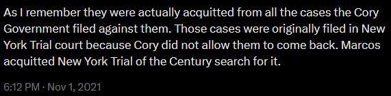

Chi-Square Test
Crit. Val. = 3.841 ; α = 0.05 ; df = 1
First Test - Relation between tweets and mention of Aquinos/Liberal Party
For this test, the null hypothesis assumes that tweets are just as equally likely to mention the Aquinos or Liberal Party as they are to not mention either of them.
The expected values are (170/2)=85 for both categories.
| Mentions Aquinos/Liberal Party? |
Observed |
Expected |
| Yes |
52 |
85 |
| No |
118 |
85 |
| Χ-stat: 25.62; p_val: 4.15e-7 → REJECT H0 |
The first test revealed a negative correlation for posts claiming the Marcoses won all of their cases and mentions of the Aquino family or the Liberal Party. This result is the opposite of our original prediction, but since the chi-squared value is greater than the critical value, and the p-value is very small, we can safely reject our null hypothesis that there is no relation between the tweets claiming that the Marcoses won all of their cases and the tweets mentioning the Aquinos, Liberal Party, or their supporters. One possible reason for this is that misinformation tweets aimed at people who are already biased in favor of the Marcos family or are neutral towards them would already have an idea of who the "opposition" is based on other misinformation or propaganda posts. As a result, mentioning a specific enemy such as the Aquino family would be unnecessary unless the goal is to provoke a response from the opposition or to convince non-supporters to agree to their theories.
Neutral mention of the Aquinos/LP

Negative mention of the Aquinos and Liberal Party member Leni Robredo
Negative mention of the Liberal Party
Negative mention of Aquino/LP Supporters
Second Test - Relation between tweets and campaign period
For this test, the null hypothesis assumes that tweets claiming that the Marcoses won all their cases are equally likely to appear regardless of what month or year it is. The expected distributions were taken by multiplying the total number of tweets with the number of months in the interval divided by the total number of months in the observation period of 2016-2022, rounded to the nearest integer.
The expected values are thus (170*8/84) and (170*76/84), which round to 16 and 154 respectively
| Posted During 2022 BBM Campaign? |
Observed |
Expected |
| Yes |
103 |
16 |
| No |
67 |
154 |
| Χ-stat: 522.21; p_val: 1.40e-115 → REJECT H0 |
The second test revealed a strong positive correlation between the posts claiming the Marcoses won all of their cases and the timing of Ferdinand Marcos Jr.'s presidential campaign in 2022. Since the chi-squared value is much greater than the critical value, and the p-value is very small, we can safely reject our null hypothesis that there is no relation between the tweets claiming that the Marcoses won all of their cases and the tweets taking place during the 2022 election campaign period of Bongbong Marcos. Rather, the data suggests that the Marcos campaign directly led to a surge in these tweets, mainly by Bongbong Marcos supporters as indicated by the activity of many of the users that posted these tweets, as well as troll accounts as indicated by the high proportion of users that posted these tweets within a year of joining.